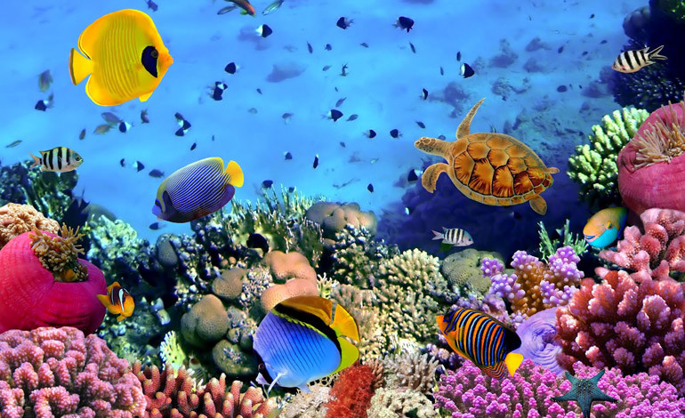
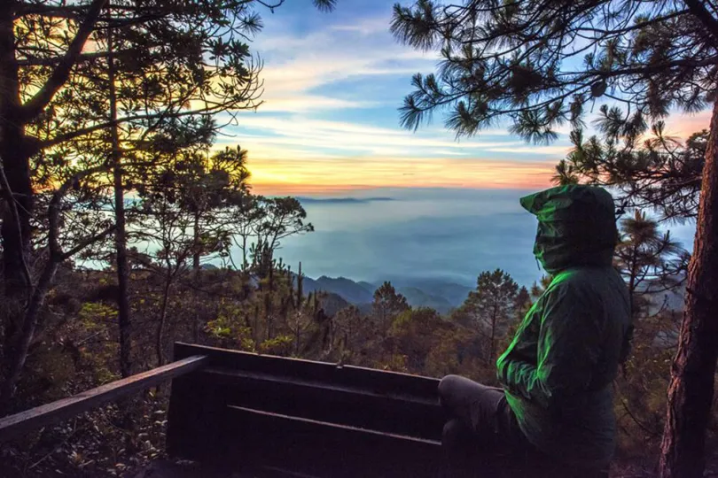

Honduras: Un tesoro por descubrir
Dejate cautivar por la magia de honduras, una tierra donde la naturaleza, la cultura y la aventura se unen para crear experiencias inolvidables.
Desde las playas de arena blanca y aguas cristalinas del Caribe hasta las majestuosas montañas cubiertas de bosques.
Lugares emblematicos de Honduras
Ruinas de copan

Caminar por Copan es equivalente a retroceder en el tiempo, revelando los misterios de una civilizacion que sobresalio por sus logros en astronomica, matematicas, arte y escritura. Envuelta por la naturaleza y una valiosa herencia
Arrecife de Coral de las Islas de la Bahia

Alberga una fantástica variedad de corales, peces tropicales, tortugas marinas y mucho más. Sus aguas cálidas y cristalinas invitan a la exploración y ofrecen un mundo lleno de biodiversidad, donde cada vista revela paisajes y ecosistemas únicos y extraordinariamente hermosos.
Parque Nacional Celaque

Para todos los amantes de la naturaleza, este es su lugar ideal, este parque esta por encima de los 2200 metros sobre el nivel del mar, existe un ecosistema de bosque nuboso, el bosque enano de altura, se le denomina asi por la poca profundidad del suelo y los fuerte svientos que no permiten que los arboles crezcan de manera normal. Este parque esta ubicado en el pico mas alto de Honduras, el cerro las minas.d